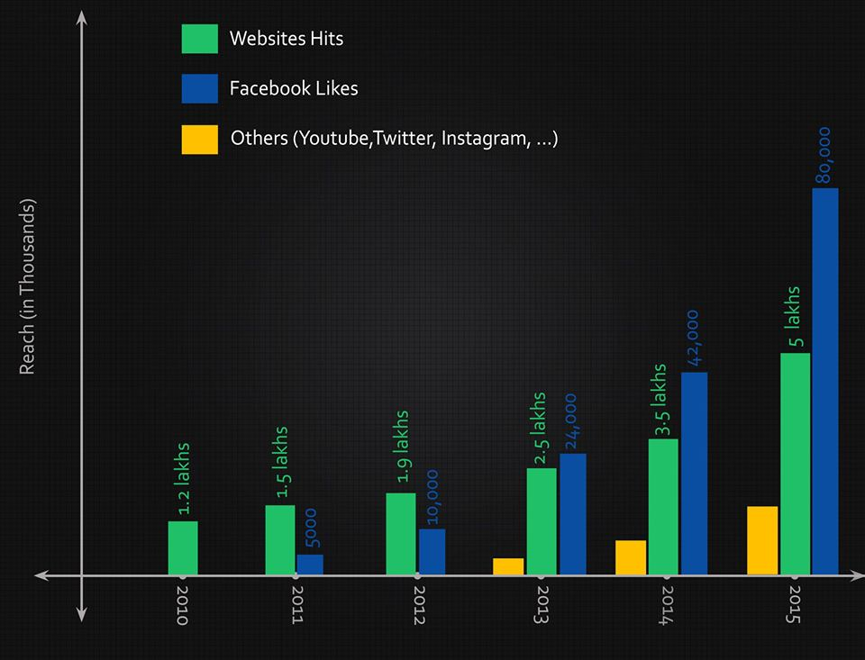
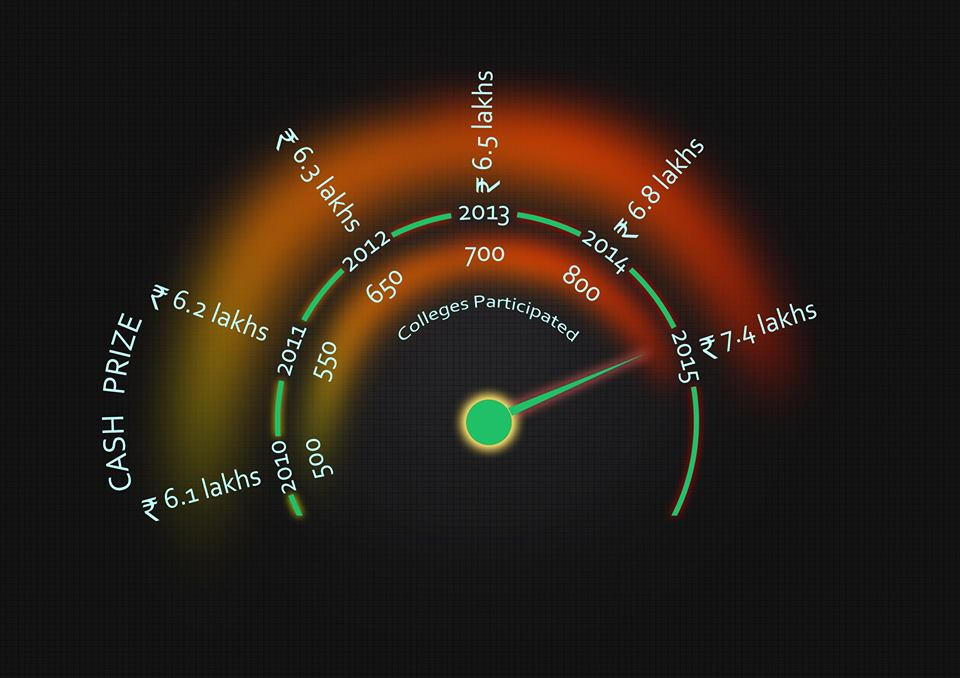
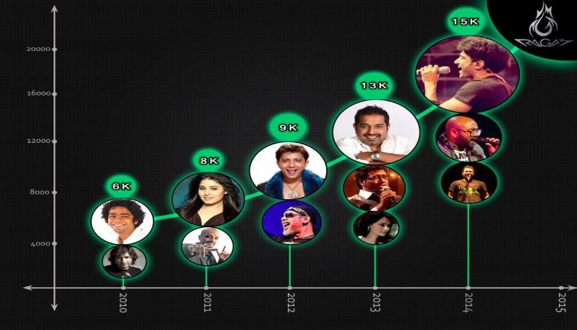

Oblivion shall not befall you my comrade, For you fought valiantly for Freedom, Honour and Justice. From its humble beginnings as an "All Kerala Rajan Memorial" music competition, "Ragam" has evolved into one of the largest cultural fests in India
One Love, One Heart
When the collective genius inspire and perspire for eons of time, Legends are Born. We present "Ragam"- The largest student-run festival in the country.
We are contagious
Since its inception, Ragam has attracted men and women from all walks of life. Extending its reach to over 15 Lakh people, Ragam has now evolved into a culture influencing artists and students nationwide.
We at Ragam, Make it Big
With a turnover of over 70 Lakhs, Ragam is the numero uno fest in South India. It has become a countrywide Cultural Phenomenon, owing to its well-structured management crafted to perfection over two decades.
Events
Ragam offers a spectacular inventory of over 50 events encompassing literary, musical, dance, dramatics and fine-art contests. It has carved out a unique niche for itself by conducting ingenious new competitions that truly rise up to the spirit of this fiesta. The exciting prizes at stake attract the best talent from all over the country to battle it out to raise the coveted ever-rolling trophy.
Proshows
Ragam is marked by its electrifying proshows that enthral music aficionados countrywide. Exuberant performances by maestros like Shankar Mahadevan, Sunidhi Chauhan, Sukhwinder Singh, Benny Dayal and Farhan Akthar have rocked the Ragam stage. Offering a platform for budding talents, it has also witnessed remarkable performances by bands like "Parikrama", "Lagori" and "Jai Ho team".
We Welcome Everyone
Ragam appeals to all members of the society, the young and old alike. The three days of Ragam brings the city into the spotlight and spreads the Ragam fever nationwide. We also receive commendable support from the media and the main events of "Ragam" never fail to make headlines annually.
Ragam'14
Cultural impact
The diverse cultures of people from different states across the country were on display with Ethnicity stalls being put up showcasing the best of each culture. Ragam'14 has been a stage for a lot of artists to grow and a constant source of encouragement as always.
Take One
The biggest short film competition in South India got even bigger with the winners, decided by an elite panel of prominent film makers like Bobby Sanjay and Arun Kumar Aravind, taking home huge cash prizes besides receiving other great opportunities.
Proshows
'Lagori'! 'Farhan Akhtar'! 'Benny Dayal'! "Ragam'14" proshows will remain in the hearts of the thousands who attended it and many who couldn't get tickets, owing to the sheer energy of the aura that the crowd revelled in.
Sneha Ragam
Sneharagam was conducted on a larger scale, providing a platform for the differently abled children in our society to express their talents, and in turn, restoring their confidence that they are one amongst us.
Ragam'14
Footfall
40000+
Ragam'14 witnessed the largest crowd ever seen for Ragam till date, with an estimate 40000 people believed to have visited the campus over the 3 days of the cultural fest
Participation
3000+
The standard of events was raised a notch for Ragam'14 and this was the result of a record number of participants with total registrations exceeding 3000
Online Reach & Visibility
Ragam is one of the most popular cultural fests in India and is well connected online with the Ragam Facebook page having almost 45K likes, with its posts reaching nearly 2.5 Lakh people online.
Media
Like its previous editions, Ragam' 14 too received extensive media coverage and support from different sections of the media with its news being featured in leading dailies like The Hindu,Indian express, Malayala Manorama and Mathrubhumi.
Ragam'15 Predictions
Online Reach
Stats
Cash Prizes
Proshow Demand



Why Sponsor Us
Before Ragam
During Ragam
After Ragam
Deliverables:
Social Media Promotions
Website Branding
Poster Promotion
Publicity Drives/ Stunts
Incollege Events
Online Events
Promo Videos
Teasers
Calicut City Posters
Media/Theatre Ads
Benefits:
Branding
Online Reach-National
Online Promotional Activity
User interactive Marketing
Deliverables:
National Celebrity/ Coverage
Television airing/Media publicity
Stalls, Banners, Photobooths
Goodies, Giveaways, Coupons Distributes
Informals and Customized event promotions
Student, crowd interaction
Data collections and surveys
Product/film/audio release
Events
T-shirts
Benefits:
Prime Visibility
Target Crowd
National Pool
Branding Events, Media and News
Video Footage
Permananent mark-tshirt
Goodies & Photobooths
Sales
Review, Familiarization & Interaction
Deliverables:
Prime Visibility
In- college Distributions
Target Crowd feedbacks
Databases
Souveniers
Mementos
Benefits:
Permananent Branding
Online Growth
League of Sponsors
Sales hike
Use of Ragam Brand Association
Allowing Customized promotions
Previous Sponsors
Contact Us
Marketing Christopher Jacob +91 9846095751 christopher@ragam.org.in
Marketing Akhil Raj K +91 9400792002 akhilraj@ragam.org.in
Marketing Nandagopal R +91 9497321312 nandagopal@ragam.org.in
General Secretary Dilber Shahul +91 9567670916 dilber@ragam.org.in
Convenor Abdul Wasih +91 8547562834 wasih@ragam.org.in
Events Co-ordinator Hafiz Muhammed +91 8089219732 hafiz@ragam.org.in